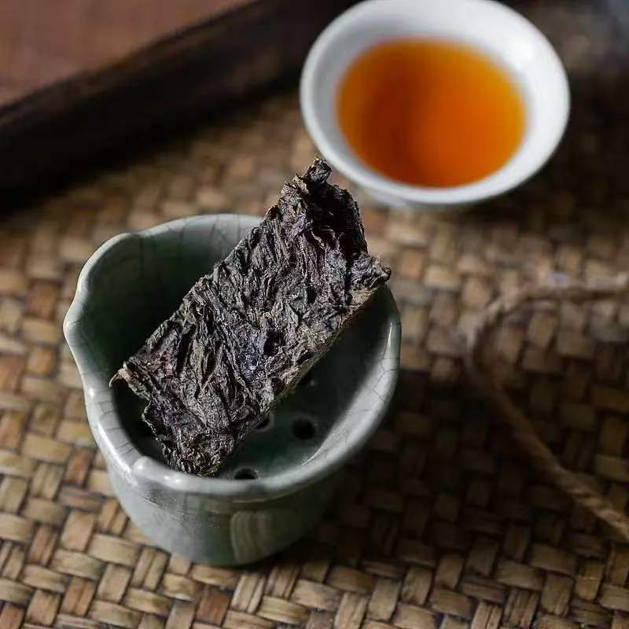
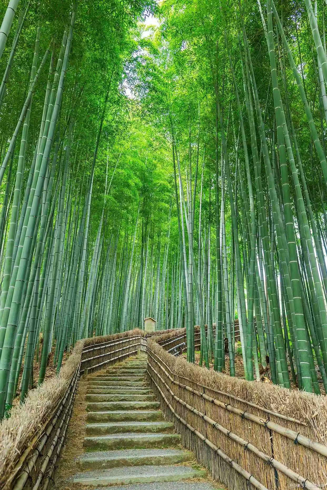
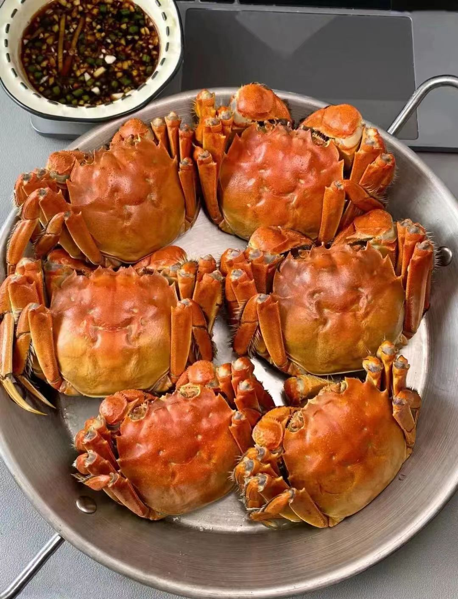
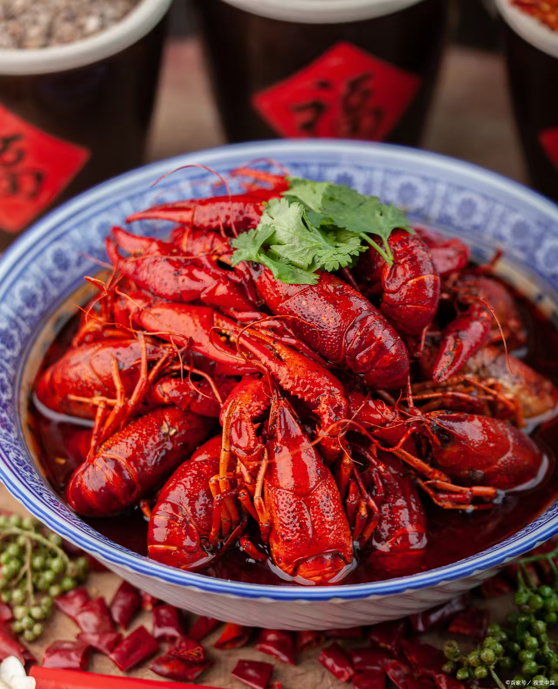
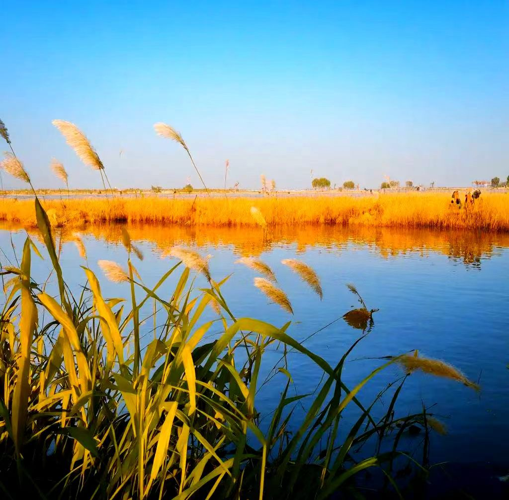

益阳安化是黑茶之源，千两茶、茯砖茶闻名海内外，制作技艺已入选联合国人类非物质文化遗产名录。

桃江县楠竹林面积达百万亩，全球约60%的楠竹产品来自这里，竹海连绵、竹楼人家，是避暑胜地。

大通湖是湖南最大的内陆湖泊之一，湖水清澈、水草丰茂，出产的大闸蟹膏满黄肥，是湖南地理标志产品。

南县推行「稻虾共作」生态模式，产出的稻虾米晶莹软糯、米香浓郁，同时小龙虾个大肉嫩，一田双收。

南洞庭湖湿地拥有亚洲最大的连片芦苇荡，秋冬时节芦花似雪，是候鸟迁徙的重要驿站。